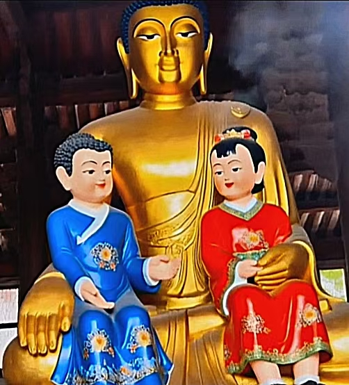

互安互安，互保平安。
互安菩萨雕塑自1985年修建于永淮村正北方向，由凤卯市市长郑祁安所建。
祠庙面向村庄，庄严肃静。
虽是民间野神，但其影响力在永淮村不容小觑。每月固定几天都需要人前去祭拜。
互安菩萨最喜孩童，孩童在永淮村视为神圣的代表，因此，和村民相比，他们是最能接近互安菩萨的存在。正式祭拜的过程中村民需要带孩童前去，以此让菩萨开心，保佑村庄风调雨顺。
祭拜菩萨的过程中为彰显虔诚需三叩九拜。
一拜五福，一叩六安。
五福指代：长寿、富贵、康宁、好德、善终。
六安指代：安定、安泰、安和、安康、安适、安业。
*互安：互安菩萨需要依靠信仰存活，人带来信仰，即保菩萨平安；依靠信仰为村庄里的人带来福运，即保人的平安，此为互安。
神因被信仰而神，人因得庇佑而安。这份神人互济、彼此成就的羁绊，正是互安菩萨独享的、至高无上的天道。